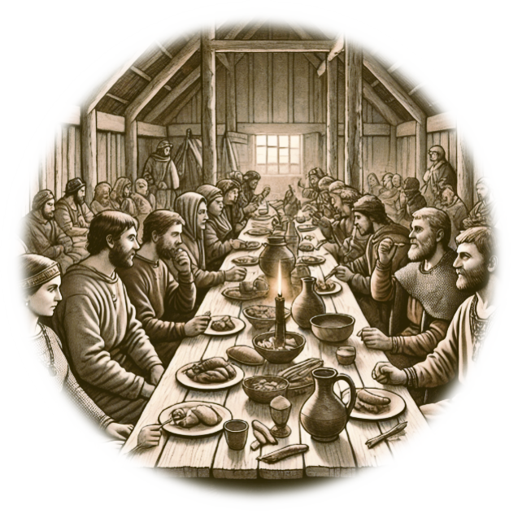

The Anglo-Saxons
Introduction
When the Roman rule in Britain ended in 410 AD, 49 years later in 459 AD the Angles and the Saxons began to invade Britain. Unlike the Romans who like to live in big towns, the Anglo-Saxons prefer to live in small villages. Have you ever thought about what food they ate, and what type of jobs they did?
Where did the Anglo Saxons come from?

The last Roman soldiers left Britain by AD410. New
people came to Britain in ships across the North Sea
– the Anglo-Saxons. The Anglo-Saxon age in Britain
was from around AD410 to 1066.
- The Anglo-Saxons were a mix of tribes from Germany, Denmark and the Netherlands.
- The three biggest were the Angles, the Saxons and the Jutes.
- The land they settled in became known as 'Angle-land', or England.
- They brought Germanic languages and new customs and dress.
If we use the modern names for the countries they came from,
the Saxons were German-Dutch,
the Angles were Southern Danish,
and the Jutes were Northern Danish
They arrived over a number of decades.
What food and drink the Anglo-Saxons had

Are you aware that the Anglo-Saxons were mostly vegetarian. Vegetables
they ate included onions, garlic, cabbage, turnips,
beetroot, parsnips, carrots (Which back then wear white) beans and peas. In addition, they
ateavailable fruits, cherries, berries, apples and plums. They also turned fruit into alcohol, which they
had to drink because the water was often polluted. Their favourite meets were deer and wild boar, and the food was cooked over the fire in the middle of the house. Sometimes the best cuts of meat would go to the Lord (the chief of the village) and the wealthier
families.The fire in the house/hall could also cook stews in a large cauldron, smoke would rise up and preserve the fish and meat. In addition, they used salt mined in Worcestershire for preserving food.
What jobs did the Anglo-Saxons do
The Anglo-Saxons had a range of jobs and roles within their society, reflecting their largely agrarian lifestyle, craftsmanship, and communal needs. Here are some common jobs

Farmers:
Most Anglo-Saxons were farmers, growing crops like wheat, barley, and rye and raising animals such as cattle, sheep, and pigs. Blacksmiths:
Crafted tools, weapons, and everyday metal items, essential for daily life and defense.
Carpenters:
Built wooden structures, homes, furniture, and tools.Weavers and Spinners:
Primarily women who made fabric for clothing using wool and flax.-
Potters:
Made pottery for household use, including cooking pots, bowls, and storage jars.
Bakers and Millers:
Processed grains into flour and baked bread, a staple food.Fishermen:
Caught fish from rivers, lakes, and the sea, contributing to the community’s diet.Hunters:
Provided meat and animal products, such as hides and furs, through hunting.
-
Merchants and Traders:
Exchanged goods locally and abroad, trading items like wool, silver, and jewelry.
Priests and Monks:
Religious figures who played key roles in spiritual guidance, education, and manuscript production.
Warriors and Soldiers:
Protected their communities, served local lords, and participated in raids and battles.
Minstrels and Storytellers:
Provided entertainment, preserved history, and shared news through songs and tales.
-
Stone Masons:
Worked on more durable buildings, such as churches, and crafted gravestones.
Tanners and Leatherworkers:
Made leather goods, including shoes, belts, and harnesses.
Shipbuilders:
Constructed boats for transport, fishing, and warfare.
Why did the Anglo-Saxons come to Britain?
To fight
The Anglo-Saxons arrived firstly as warriors employed by the Roman army and then, two generations later, as settlers, to farm the land.
To farm
Many Anglo-Saxons came peacefully, to find land to farm. Their homelands in Scandinavia often flooded so it was tough to grow enough food back there.
To make new homes
Whole families set sail across the sea in small boats to live in Britain. They brought tools, weapons and farm animals with them and built new villages.
some other websites you might like